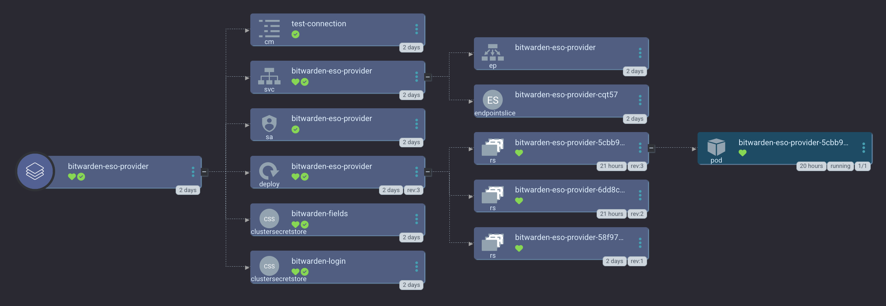

Bitwarden ESO Provider
We use the Bitwarden ESO Provider along side the external-secrets-operator to pull secret data from your Bitwarden vault, into the cluster as Kubernetes Secrets.

smol-k8s-lab stores any sensitive user specific data about applications in your Bitwarden vault. Some examples include admin credentials, database credentials, and OIDC credentials.
Head over to the Bitarden ESO Provider helm chart to learn more, and then see how it is configured at small-hack/argocd-apps.
Sensitive values
To use the Bitwarden provider, we need your Client Secret, Client ID, and your Bitwarden password. You can choose to provide these as one time values each time your run smol-k8s-lab, or you can export the following environment variables before running smol-k8s-lab:
BITWARDEN_PASSWORDBITWARDEN_CLIENTSECRETBITWARDEN_CLIENTID
default yaml configuration
For Bitwarden, if you'd like to deploy it alongside the External Secrets Operator, you just need to set your provider for the apps_global_config.external_secrets paramter to "bitwarden" in your config.yaml. Make sure that apps.external_secrets_operator.enabled is also set to true.
1
2
3
4
5
6
7
8
9
10
11
12
13
14
15
16
17
18
19
20
21
22
23
24
25
26
27
28
29
30
31
32
33
34
35
36
37
38
39
40
41
42
43
44
45
46
47
48
49 | apps_global_config:
# Must be a string of "" (don't use external secrets) or "bitwarden" to use bitwarden for external secrets*
external_secrets: "bitwarden"
apps:
external_secrets_operator:
enabled: true
description: |
[link=https://external-secrets.io/latest/]External Secrets Operator[/link] is a Kubernetes operator that integrates external secret management systems like HashiCorp Vault, CyberArk Conjur, Bitwarden, Gitlab, and many more. The operator reads information from external APIs and automatically injects the values into a Kubernetes Secret.
To deploy the Bitwarden provider, please set apps_global_config.external_secrets to "bitwarden".
The [link="https://github.com/small-hack/bitwarden-eso-provider/"]Bitwarden External Secrets Provider[/link] is used to store k8s secrets in Bitwarden®. This deployment has no ingress and can't be connected to from outside the cluster. There is a networkPolicy that only allows the pod to communicate with the External Secrets Operator in the same namespaces.
smol-k8s-lab support initialization by creating a Kubernetes secret with your Bitwarden credentials so that the provider can unlock your vault. You will need to setup an [link=https://bitwarden.com/help/personal-api-key/]API key[/link] ahead of time. You can pass these credentials in by setting the following environment variables:
BITWARDEN_PASSWORD, BITWARDEN_CLIENTSECRET, BITWARDEN_CLIENTID
# Initialization of the app through smol-k8s-lab
init:
enabled: false
argo:
# git repo to install the Argo CD app from
repo: https://github.com/small-hack/argocd-apps
# path in the argo repo to point to. Trailing slash very important!
# change to external-secrets-operator/external-secrets-operator/ to deploy
# ONLY the external-secrets-operator, so this will not use app of apps and
# therefore we will not deploy the Bitwarden ESO provider. Use if you want to use
# a different provider
path: external-secrets-operator/app_of_apps/
# either the branch or tag to point at in the argo repo above
revision: main
# kubernetes cluster to install the k8s app into, defaults to Argo CD default
cluster: https://kubernetes.default.svc
# namespace to install the k8s app in
namespace: external-secrets
# recurse directories in the provided git repo
directory_recursion: false
# secret keys to provide for the Argo CD Appset secret plugin, none by default
secret_keys: {}
# source repos for Argo CD App Project (in addition to app.argo.repo)
project:
name: external-secrets-operator
source_repos:
- https://charts.external-secrets.io
# you can remove this one if you're not using bitwarden to store your k8s secrets
- https://small-hack.github.io/bitwarden-eso-provider
destination:
# automatically includes the app's namespace and argocd's namespace
namespaces: []
|
{kind=link}